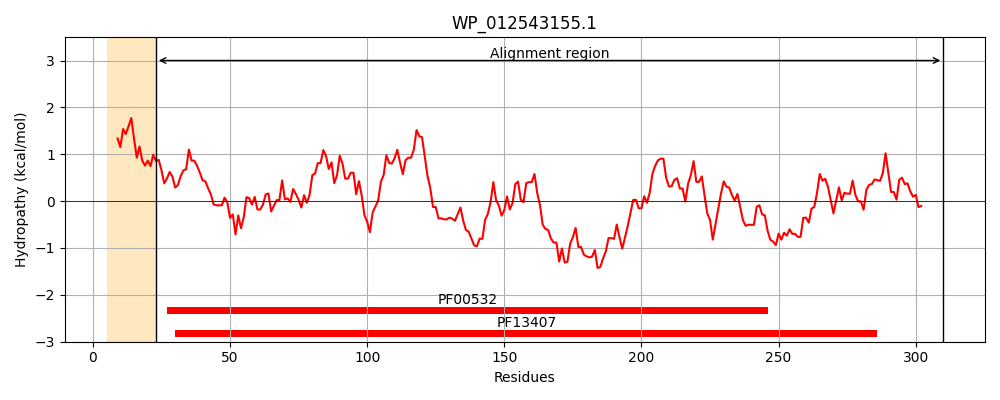
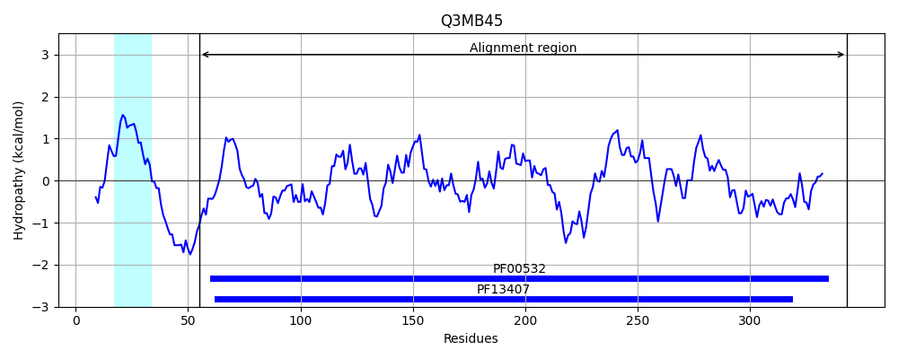
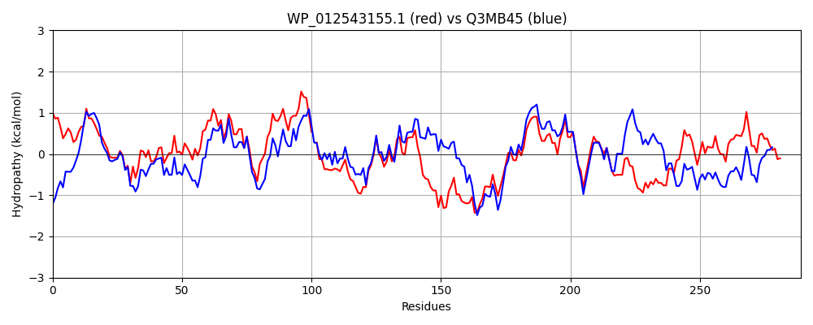

Hit Accession: Q3MB45
Hit TCID: 3.A.1.2.29
Hit Description: gnl|BL_ORD_ID|13522 gnl|TC-DB|Q3MB45|3.A.1.2.29 Monosaccharide ABC transporter substrate-binding protein, CUT2 family OS=Anabaena variabilis (strain ATCC 29413 / PCC 7937) GN=Ava_2171 PE=4 SV=1
Mach Len: 289
e:0.000000
Query TMS Count : 1
Hit TMS Count: 1
TMS-Overlap Score: 0.000000
Predicted Substrates:CHEBI:4119;keto-D-fructose
BLAST Alignment:
Score: 872 , Bit scores: 340 bits, E-value: 5.4e-117, Alignment length: 289, Percentage identity: 57
Query: 23 SAKELKAIGVTVGDLANPFFVQITKGAELEARKLAGDNVKVTLVSSGYDLGQQVAQIDNFIAAKVDMIILNAADSKGIGPAVKRAKEAGIVVVAVDVAAEG-ADATITSDNTQAGELACKYISDRLNNKGSVVIINGPPVSAVQNRVEGCETEFKKHPDIKILSSNQNAKGSREGGLEVMTSLLAANPKIDGVFAINDPTAIGADLAAKQAQRSEFFIVGVDGSPDGEEALKRKNSLFVATPAQDPQVMAAKAVEIGYDILQGKPAPTAPVLIPVTMIDKNNVSSYKGW 310
S +L+++GVT+GDL+NPFFV + +GAE EA+K+ G++V+VT+VSSGYDL QQ QI+NF+AA D+II+NAADSKGI PAV +A++AG VV+AVD A E DAT+T++N QAGE++C+YI+DRL KG+VVI+NGPPV++V RV+GC K+PDIK+LS +QNA+GSR+GGL VM+ LL PKID VFAINDP+ +G DLAA QA+R +FFIVGVDG+P+ EA+ +SL+ AT Q+P+ M A+++G DIL GK + +LIP +I K NVS+ GW
Sbjct: 55 SPHKLRSVGVTLGDLSNPFFVVMAQGAEKEAKKIGGEDVRVTVVSSGYDLNQQFNQIENFVAANTDLIIINAADSKGIRPAVDQARQAGKVVIAVDTAIEADIDATVTTNNVQAGEISCQYIADRLKGKGNVVIVNGPPVTSVIQRVDGCLKVLAKYPDIKLLSKDQNAEGSRDGGLRVMSDLLVTFPKIDAVFAINDPSGVGVDLAANQAKRQDFFIVGVDGAPEAIEAIASGDSLYAATATQNPRGMTQTAIQVGNDILHGKKPESPNILIPAKLITKENVSTSTGW 343 | Protein Hydropathy Plots: |
|---|
|  |  |
Pairwise Alignment-Hydropathy Plot:
|
|---|
|  |